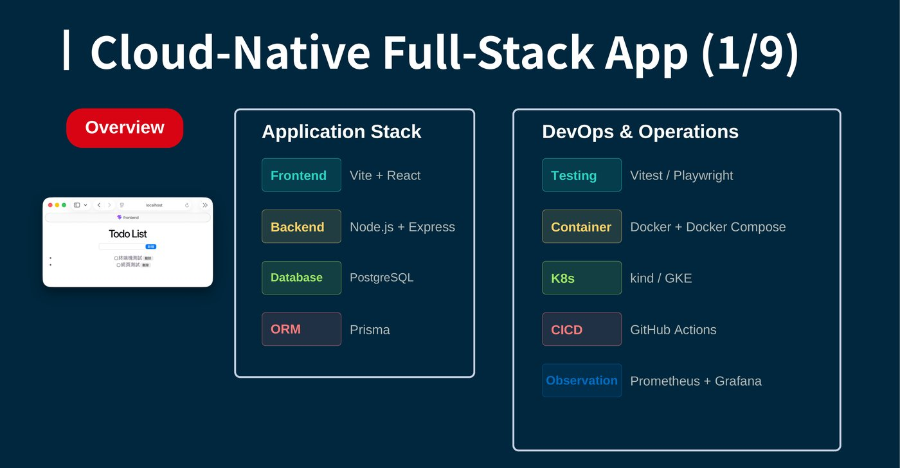
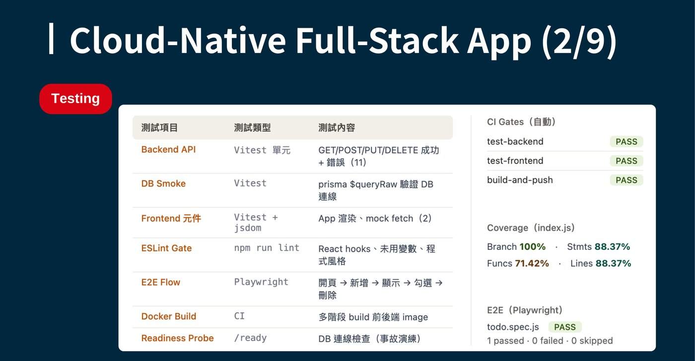
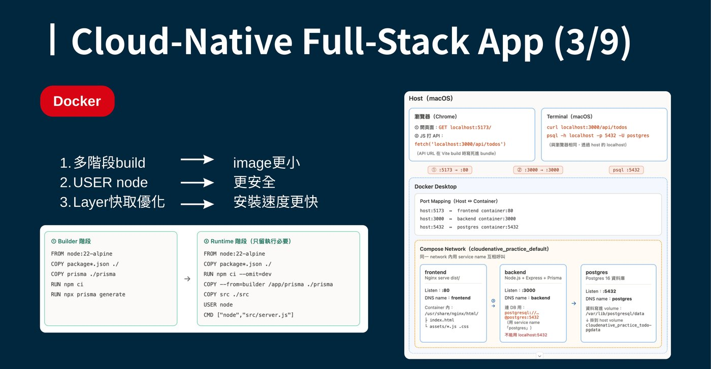
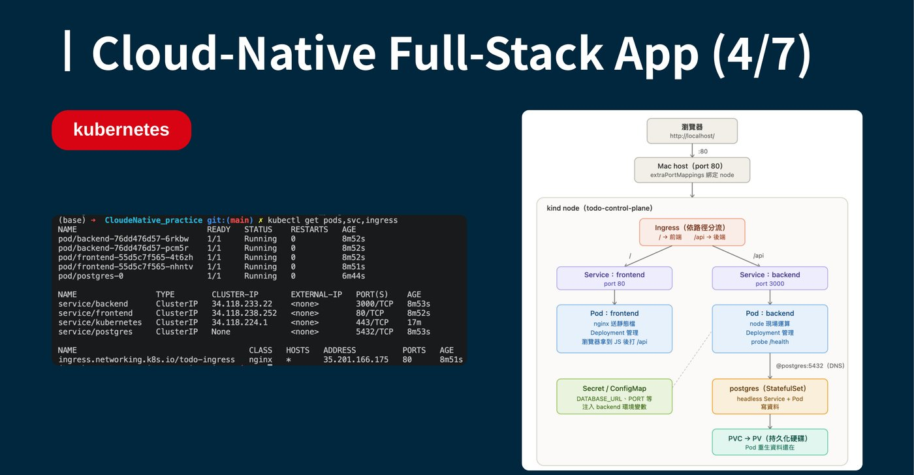
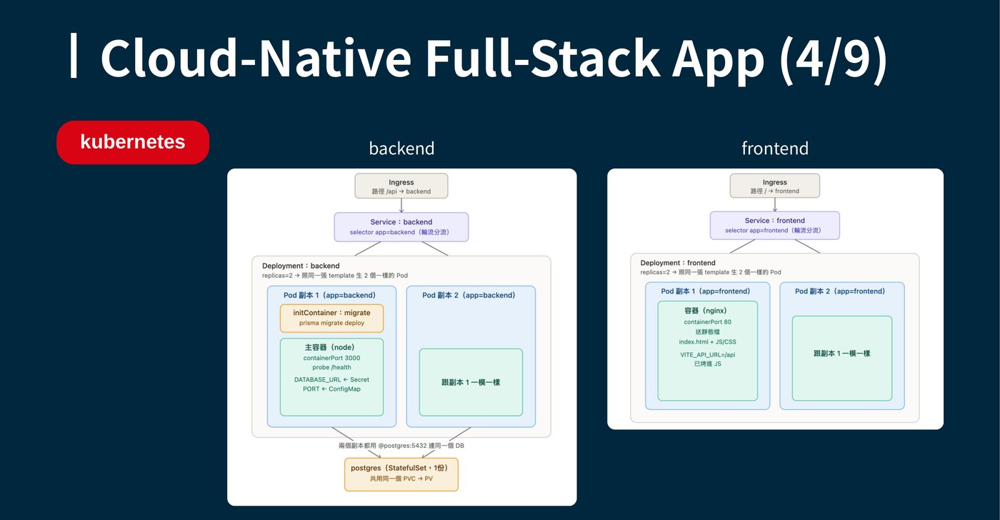
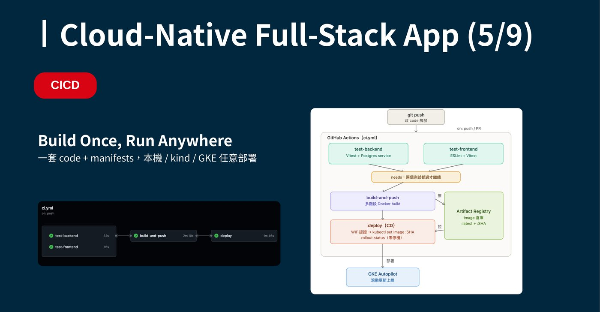
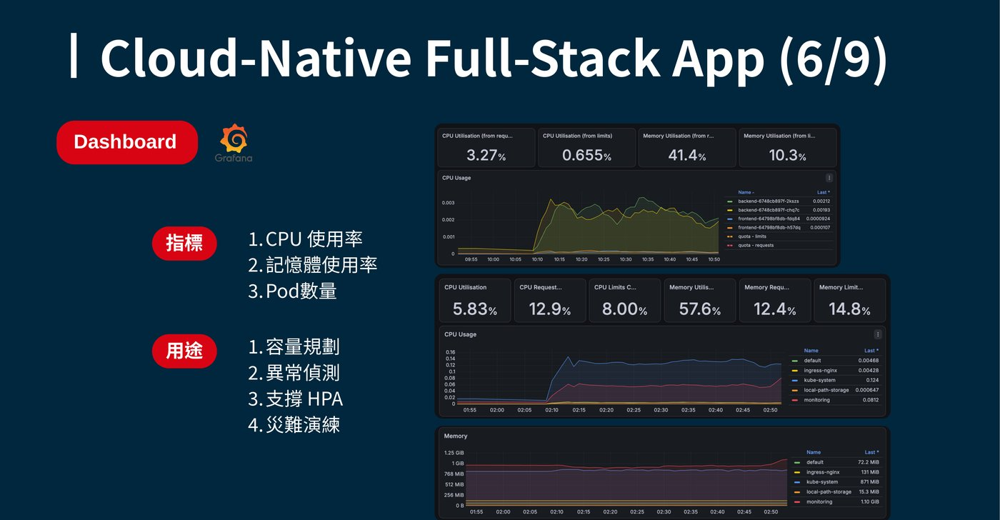
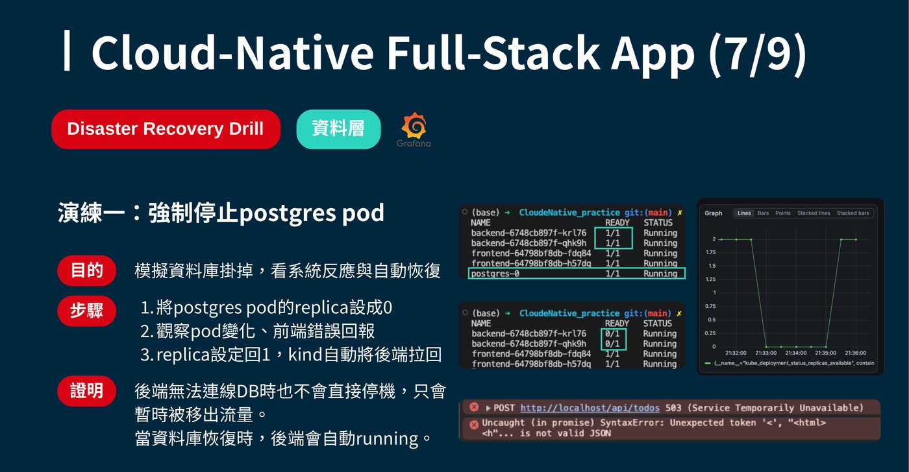
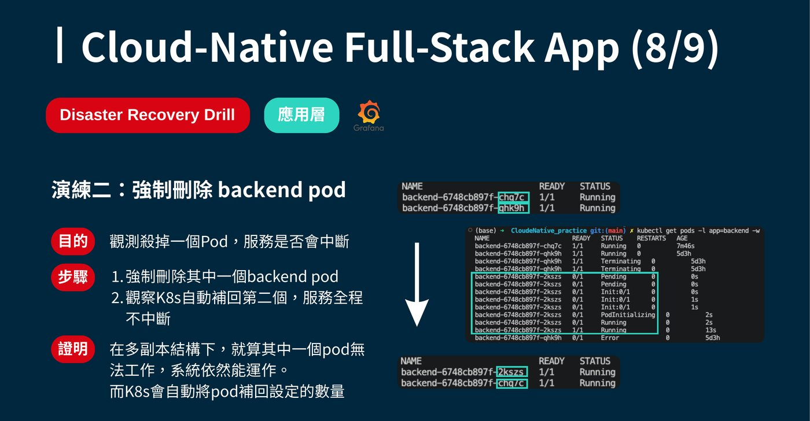
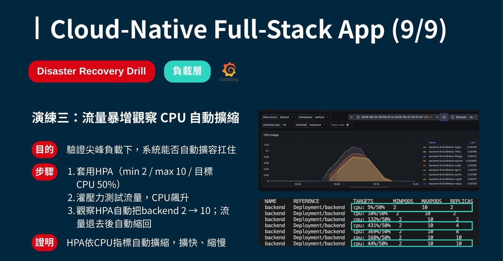

01 · Selected Work · 2025
Cloud-Native 全端應用（GKE）
把一個 Todo List 應用——Vite + React 前端、Node.js + Express 後端、 Prisma + PostgreSQL 資料層——完整走過容器化、Kubernetes 部署、 CI/CD 自動化、可觀測性與三場故障演練的每一步，目標是「Build Once, Run Anywhere」： 同一套 code 與 manifests，本機 kind、GKE 都能任意部署。

專案總覽
應用本身是一個 Todo List：Vite + React 前端、Node.js + Express 後端、 Prisma 作為 ORM 存取 PostgreSQL。真正的重點不在「做一個 Todo App」， 而在它背後完整的維運能力——測試、容器化、Kubernetes 部署、CI/CD、可觀測性， 以及最後拿真實故障場景驗證這套系統到底禁不禁得起壓。
測試策略
測試分成好幾層，每一層都對應一個實際可能出錯的地方：Backend API
用 Vitest 覆蓋 GET/POST/PUT/DELETE 的成功與錯誤情境（11 個測試）、
DB Smoke 用 Prisma 的 $queryRaw
驗證資料庫連線本身是活的、Frontend 元件用 Vitest + jsdom 驗證渲染與 mock fetch、
ESLint Gate 擋掉不合規範的程式碼、E2E Flow 用 Playwright 跑過
「開頁 → 新增 → 顯示 → 勾選 → 刪除」完整使用者流程、Docker Build 在 CI 裡驗證
多階段建置可以成功，最後 Readiness Probe（/ready）
專門用來檢查資料庫連線，直接對接後面的故障演練。

Docker 容器化
前後端都採用多階段建置（multi-stage build）：Builder 階段負責裝依賴、跑
npx prisma generate，
Runtime 階段只留執行必要的檔案，並以非 root 的 USER node 執行，
兼顧 image 體積更小、執行更安全；再搭配 layer 快取順序優化，讓每次重建的安裝速度更快。
本機用 Docker Compose 起三個服務（frontend / backend / postgres），彼此在同一個 network 裡用
service name 互相呼叫，資料寫進掛載的 host volume，容器重生資料還在。

Kubernetes 部署架構
對外只有一個 Ingress，依路徑分流：/
導到 frontend、/api
導到 backend。前後端都各自是 Deployment（replicas=2），由 Service 用
selector 輪流分流到兩個 Pod 副本。backend 的 Pod 在啟動前會先跑一個
initContainer 執行 prisma migrate deploy，
確保 schema 是最新的才讓主容器起來；環境變數 DATABASE_URL
來自 Secret、PORT
來自 ConfigMap，並掛 /health
health probe。資料庫則是 postgres StatefulSet，兩個 backend 副本都連到同一個
postgres:5432，
資料寫進共用的 PVC → PV，Pod 重生資料還在。


CI/CD：Build Once, Run Anywhere
每次 git push，
GitHub Actions 平行跑 test-backend（Vitest + Postgres service）與
test-frontend（ESLint + Vitest），兩者都過才會繼續往下走
build-and-push（多階段 Docker build，推到 Artifact Registry，
同時打上 :latest
與 :SHA
兩個 tag），最後 deploy 用 Workload Identity Federation 認證，執行
kubectl set image :SHA
並確認 rollout status
零停機，部署到 GKE Autopilot 完成滾動更新。整個設計的核心是「一套 code + manifests，
本機 / kind / GKE 都能部署」——本機用 kind 驗證過的東西，理論上直接部署到雲端也會是同樣的行為。

可觀測性（Prometheus + Grafana）
Dashboard 追蹤 CPU 使用率、記憶體使用率、Pod 數量三個核心指標， 用途包括容量規劃、異常偵測、支撐 HPA 的擴縮容決策，以及作為後面故障演練的觀測依據—— 沒有可觀測性，故障演練頂多只能「看起來有修好」，沒辦法真正拿數據證明系統的行為。

三場 Disaster Recovery Drill
部署完成不代表結束。我設計了三場故障演練，分別打向資料層、應用層、負載層， 目的是拿真實的失效場景驗證系統的自我修復能力，而不是只憑感覺相信「Kubernetes 應該會自動處理」。
演練一・資料層：強制停止 postgres pod
把 postgres 的 replica 設成 0，模擬資料庫掛掉。後端沒有直接跟著停機，只是暫時被移出流量，
前端會收到 503 Service Temporarily Unavailable；
把 replica 設回 1，kind 自動把後端拉回 Running。

演練二・應用層：強制刪除 backend pod
強制刪除其中一個 backend pod，觀察 Kubernetes 會不會自動補回、服務會不會中斷。 結果證明：在多副本結構下，就算一個 Pod 掛掉，系統依然能正常運作，K8s 也會自動把 Pod 數量補回設定值。

演練三・負載層：流量暴增觀察 CPU 自動擴縮
套用 HPA（min 2 / max 10 / 目標 CPU 50%），灌壓力測試流量讓 CPU 飆升， 觀察 HPA 自動把 backend 從 2 個副本擴到 10 個；流量退去後又自動縮回。

學到的事：把應用部署到 Kubernetes 只是起點，真正的功課是「它在壓力下會怎麼樣」—— 資料庫斷線後後端會不會優雅降級、單一 Pod 掛掉服務會不會中斷、流量暴增時 HPA 擴容夠不夠快， 這些都要親手打壞一次系統、用 Dashboard 上的數字驗證，才算真正確認過。